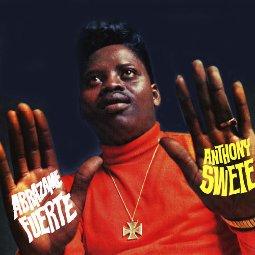

Anthony Swete
Anthony Swete was an American soul and pop singer who for a long time was associated with Ed Chalpin and his PPX record label. Recording in the 1960s and throughout the 1970s, he had a multitude of singles issued on a plethora of record labels. He also had albums released on the Clan Celentano, RCA and Zafiro labels. During his career, he had chart hits. Two of them, "Judy in Disguise" and "Hold Me Tight" were top ten hits in Argentina during the late 1960s.
Complete Discography & Tracklists (2)
2018 ALL GOOD WE ALIVE 🎵 0 Tracks
No tracks registered.